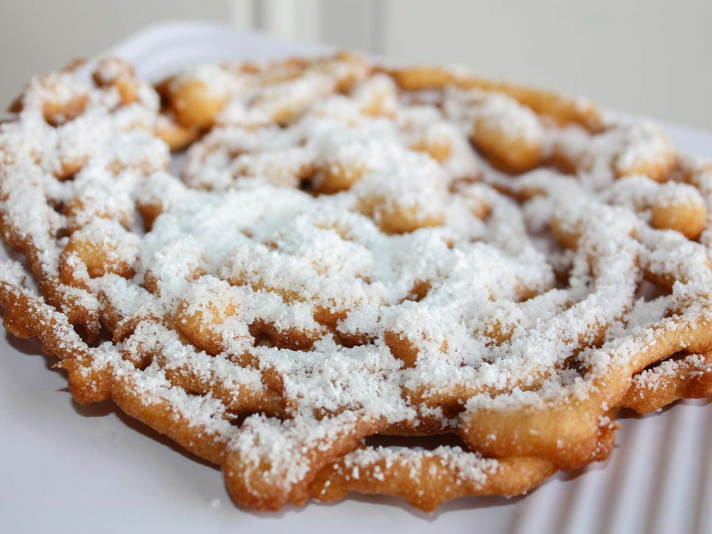

Funnel Cakes Recipe

Description
A funnel cake is a popular dessert made by frying batter. Commonly served
at carnivals and amusement parks, funnel cakes (as we know them today)
originated in Pennsylvania in the late 1800s. The fried dessert is
liberally sprinkled with powdered sugar before serving.
Ingredients
- 1 quart vegetable oil for frying, or as needed
- 1 1/2 cups milk
- 2 large eggs
- 2 cups all-purpose flour
- 1 teaspoon baking powder
- 1/2 teaspoon ground cinnamon
- 1/2 teaspoon salt
- 3/4 cup confectioner's sugar
Steps
- Heat oil to 375 degrees F (190 degrees C) in a heavy skillet.
-
Beat milk and eggs together in a large bowl. Combine flour, baking
powder, cinnamon, and salt in a separate bowl; stir into egg mixture
until smooth.
-
Use your finger to cover the funnel hole; pour in 1 cup of batter.
Starting in the center of the skillet, remove your finger and move the
funnel in a swirling motion to make a 6- or 7-inch round.
Fry in hot oil until bottom is golden brown; flip and continue cooking
until golden brown all over, about 1 minute per side. Drain on paper
towels. Continue cooking remaining batter.
- Sprinkle with confectioners' sugar and serve warm.
Return to Home Page